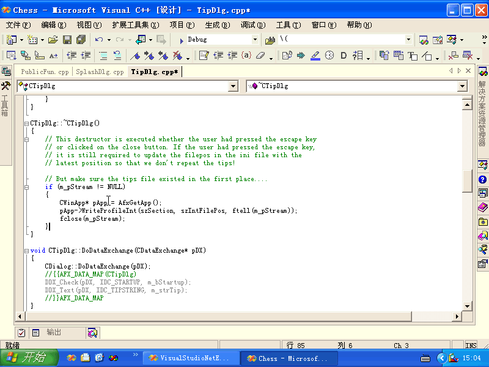

增加结束块注释
VisualStudioNetExtendTools.Connect.AddEndIf
用法：
选定要增加注释的块，再执行此命令。
注意：要格式化的代码要符合《编程规范和范例》的要求。
例如：
if(a == c) MessageBox(NULL, _T("ok"), NULL, MB_OK);
if(c == d) { MessageBox(NULL, _T("ok"), NULL, MB_OK); } // 结束 if(a == c)
这样的话就会出错。
动画演试：

下一步